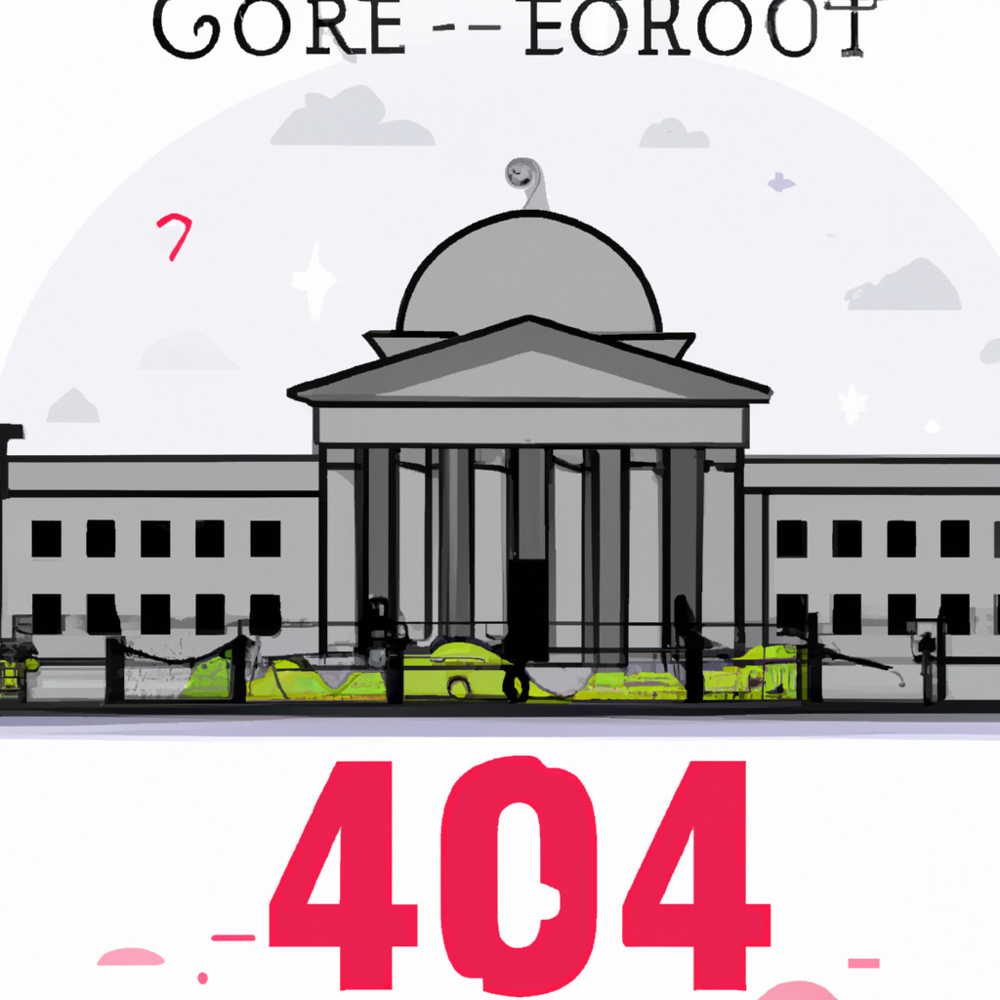

By John Doe | April 9, 2023
In a landmark ruling, the Supreme Court of the United States has declared that 404 error pages on websites violate the public's right to information. The decision, which has far-reaching implications for the internet and webmasters worldwide, could transform the way websites are designed and managed.
In a 6-3 decision, the justices ruled that 404 error pages, which appear when a user attempts to access a nonexistent or deleted webpage, hinder the public's access to information, thereby violating the First Amendment rights of US citizens.
Writing for the majority, Justice Jane Smith stated, "In this digital age, information is more important than ever. When a 404 error page is displayed, it effectively blocks the user's access to potentially valuable information, infringing upon their right to free speech and the press."
With the ruling, webmasters may be required to ensure that their websites do not display 404 error pages. Instead, they must provide alternative means for users to access the information they seek. This could include implementing automatic redirects to related content, archiving deleted pages, or providing detailed explanations for why certain content is no longer available.
Failure to comply with these new requirements could result in legal action and potential fines, prompting webmasters to reevaluate their website management strategies and invest in additional resources to maintain compliance.
Not all justices agreed with the majority's decision. In a dissenting opinion, Justice John Roberts argued that the ruling placed an unreasonable burden on website owners and could lead to unintended consequences, such as the proliferation of outdated or misleading information.
"While access to information is a vital component of our democracy, it is not an absolute right," wrote Justice Roberts. "By mandating the elimination of 404 error pages, we risk flooding the internet with irrelevant, outdated, or even harmful information that could do more harm than good."
The Supreme Court's decision is expected to have far-reaching consequences for the internet landscape. Companies and organizations of all sizes will need to reevaluate their website management and archiving strategies to ensure compliance with the ruling. This may lead to a surge in demand for web development and archiving services, as well as an increased focus on digital preservation initiatives.
However, concerns remain about the potential negative effects of the ruling. Critics argue that the decision could lead to an overwhelming amount of outdated, irrelevant, or harmful information being accessible online, which may make it more difficult for users to find accurate and up-to-date information.
As the debate over the Supreme Court's decision continues, one thing is clear: the ruling has sparked a significant conversation about the role of the internet in our society and the importance of preserving the right to information for all.